1 Introduction
This thesis presents the development of a new lattice design tool and how it was used for lattice … . The first section of this chapter gives a brief overview of the third generation light source BESSY II. The second section covers the current lattice design task at HZB. The challenges of integrating existing simulation codes in a modern and high-level programming language are discussed in the third section and are the motivation for the development of the new lattice design tool.
1.1 BESSY II - A Third Generation Light Source
The third generation synchrotron light source BESSY II is located in Berlin Adlershof and is operated by the research institute HZB since 1998. Its purpose is to provide extremely brilliant synchrotron light pulses in the range from long terahertz radiation to hard X-rays. The storage ring has a circumference of 240 m and is equipped with 50 beam-lines. A graphic overview of BESSY II is shown in fig. 1.1. The most important parameters of the storage ring are listed in tbl. 1.1.

| Parameter | Value |
|---|---|
| nominal energy | 1.7 GeV |
| circumference | 240 m |
| RF-frequency | 500 MHz |
| revolution time | 800 ns |
| beam current | 300 mA |
| number of cells | 16 |
| number of bending magnets | 32 |
| bending radius | 4.361 m |
| beam-lines | ≈50 |
The electrons are emitted by a DC grid cathode and are accelerated up to 90 keV. In the following linac their energy is increased up to 50 MeV [1]. Next the electrons are transferred to the booster synchrotron, where they are accelerated up to 1.7 GeV and are than injected to the storage ring cumulatively, so that a beam current of 300 mA is maintained (top-up). The electrons can be saved for up to 10 hours and emit, depending on the type of deflection (bending magnet, wiggler or undulator), photon energies up to 15 keV.
At BESSY II it is possible to operate the machine in two different modes. Most of the time the storage ring is set to the standard user optics with 15 ps bunch length. During two weeks of the year the lattice is changed to the low alpha optics, which provide buckets with 3 ps bunch length [2]. This can be realized by reducing the momentum compaction factor from to . The coherent synchrotron radiation instability leads to a limiting bursting threshold current, which scales with~. Therefore the photon flux has to be reduced significantly in comparison to the standard optics. In this time high flux user are not able to run experiments, which is the reason that the low alpha mode can only be provided for short periods.
1.2 Lattice Development at HZB
At HZB there a several lattice development tasks which require convenient and interactive tools.
1.2.1 Enlarging the Available Installation Length for VSR Cryomodule
AT the HZB superconducting cavities are developed for the generation of long and short electron bunches. A cavity module, consisting of two 1.5 GHz and 1.75 GHz cavities each, can be assembled into a straight of the BESSY II storage ring, if the space for the module can be enlarged by modifying the beam optics. One possible solution is to remove two quadrupoles to gain the required installation length. With a self-developed code the two quadruples were turned off in simulations and the obtained optics was transferred to the storage ring. To avoid coupled bunch instabilities low beta functions within the VSR-module are required.
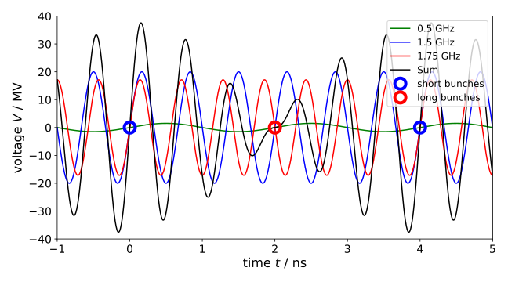
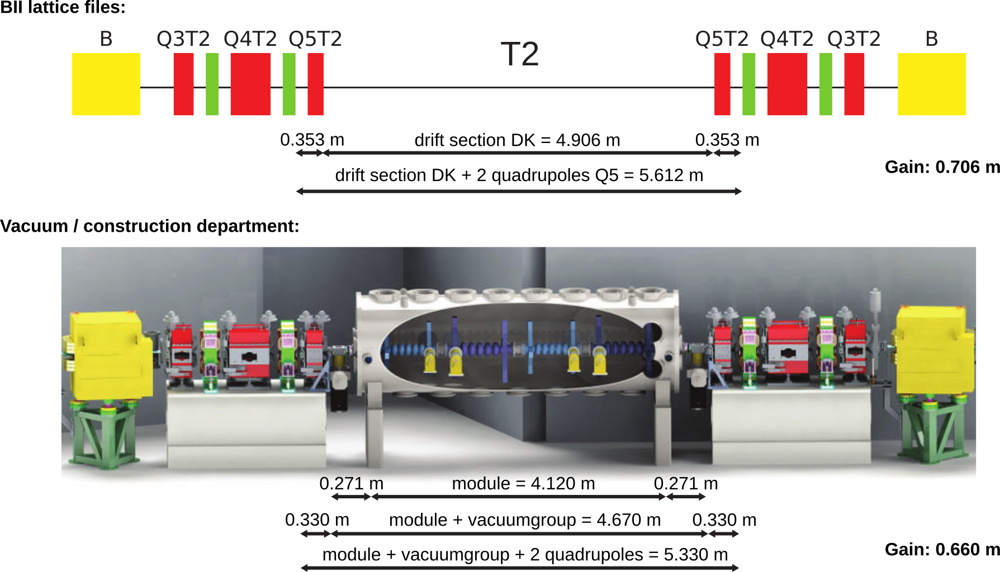
1.2.2 Adapting the Beta Functions of the BESSY II Storage Ring
For certian experiments smaller adjustments of the beta functions are needed. In the case of an emittance exchange erxperiment …
1.2.3 Development of the BESSY III Lattice
- Viel los in der Welt: MBA lattices worldwide as updates for lowest emittance, but no timing: https://www.maxiv.lu.se/science/accelerator-physics/current-projects/timing-modes-for-the-max-iv-storage-rings/
1.3 Motivation: The Need for a Python Interface to Particle Accelerator Simulations
MAD-X [4] and elegant [5] are the most mature and commonly used accelerator physics simulation codes. Both programs a driven by an input file - often called run-file. This file defines various simulation parameters, but can also be used to define an optimization procedure. After the execution the results are stored in an output file. Over the years there emerged various tool-kits and programs to inspect, post-process and plot these results. Sometimes, for complex runs more flexibility is needed, which is the reason Python is commonly used for post-processing and analysis of the simulation data.
Python has a rich ecosystem of numerical libraries and optimization tools, which is growing day by day. It has become the go-to language for scientific computing and machine learning. A typical workflow of using MAD-X or elegant with Python would be (see fig. 1.4):
- Create a run file
- Run the simulation defined by the run-file
- Store the results as file.
- Load the simulation results into Python and post-process the data.
- Output the post-processed data. (e.g. a plot or a new optics file)
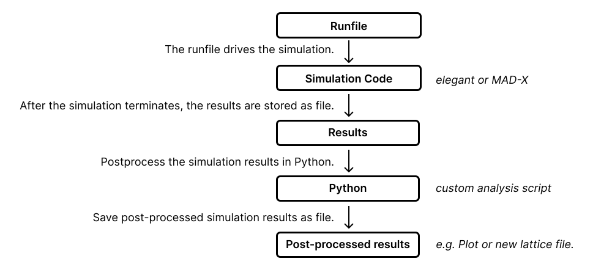
One issue of this workflow is that not all information contained within the data-structures and models of the simulation software is included in the output files. For example MAD-X and elegant do not include complete model of the accelerator’s lattice, but only an arrays of elements for the simulated orbit positions. Another issue is that the execution of MAD-X and elegant can only be driven be their respective run-file. Although both run-files provide basic features of a programming language, such as variables, loops or if-else statements, their capabilities are extremely limited in comparison to Python. Therefore it would be desirable to drive the execution of the simulation using Python. Full access to the accelerator model of these simulations softwares would require to implemented a Python interface for MAD-X or elegant. PyMAD [6] was an attempt to create a Python API for MAD-X. As Python is a highly object oriented language an MAD-X is mainly written in C and Fortran, it is not trivial to design an API which fits the different programming paradigms of these languages. The PyMAD project is unmaintained since 2017.
To still leverage the powerful optimizers of the Python ecosystem one common workaroud is to use a template lattice-file or run-file: At the beginning of each iteration Python is used to generate a unique input file by inserting the values of the optimization parameters into the template file. Using this new run-file Python then starts the simulation software as sub-process, parses the results, calculates the values of the fitness function and lets the optimizer compute the values of the optimization arguments for the next iteration. This is repeated until the terminating condition of the optimizer is met. Afterwards the final results are saved to a file. This workflow is illustrated in fig. 1.5
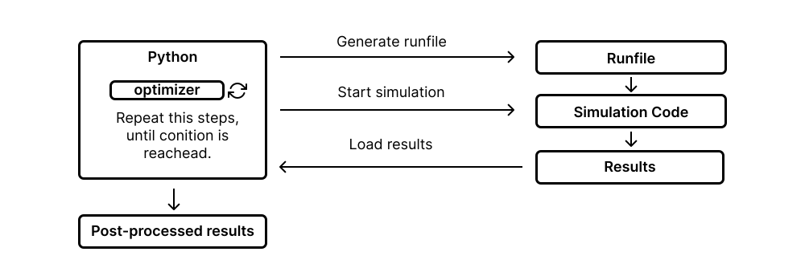
has several drawbacks:
- It is computationally very inefficient: The simulation software has to parse the run-file and rebuild the accelerator model for each iteration, because the memory is freed after the program terminates.
- Storing simulation results in a file and loading them into Python for each iteration is another performance issue: Hard disks are many magnitudes slower then computer memory. Even though this could be enhanced by using a RAM disk, serializing and deserializing the simulation results for each iteration is still not optimal.
- Substituting strings in a run-file is very error prone and can lead to hard to find bugs.
For these reasons it would be desirable to have an direct Python API to drive the execution of accelerator simulations. As discussed above, integrating one of the existing simulation codes in Python is a difficult task. It was therefore decided to develop a new optics code as native Python package. As Python is a dynamically typed language and its major implementation CPython does not convert the source code directly into native machine instruction, ordinary Python programs execute slower than programs written in lower level languages like C or Fortran. To ensure extremely fast calculation of the Twiss parameter, which are necessary because high-dimensional optimizations often require millions of iterations, time-critical parts were implemented using the C language.
The code is partially based on scripts written for the Q5T2-off optics of my Bachelor’s thesis. At the time of this thesis, the code is capable of calculating most of the linear parameters like the Twiss parameters, the dispersion function, the betatron phase and tune, the momentum compaction factor, the natural chromaticity, emittance and synchrotron radiation integrals. Particle tracking is implemented by the matrix method. There is an experimental branch which is able to do particle tracking by integrating the equations of motion, which is used for some plots in this thesis, but not well tested.
A main feature of the developed code is its accelerator model, which includes an internal dependency graph between the elements of the accelerator: Whenever an element changes on of its attributes it automatically notifies all its dependents. For example if an magnet changes its length it notifies its containing lattice that its length has to be recomputed, which then again notifies then a simulation method, that for example the linear optics parameter have to be recalculated the next time their accessed. This is not only convenient for the users, because they do not have to keep track complex dependency relations, but also ensures, that only outdated properties are recomputed and no performance is wasted on calculating already known values.
Furthermore this accelerator model provides an extensible foundation for future simulation methods. At HZB there is currently work going on to enable particle tracking using Lie maps [reference tom/jernej], which could be implemented on top of this accelerator model.
An introduction to the physical foundation of the developed code is provided in the next chapter.
2 Beam Dynamics in Electron Storage Rings
This chapter introduces the basics of electron beam dynamics in ciruclar accelerators. The books of H. Wiedemann [7], A. Wolski [8], K. Wille [9] and F. Hinterberger [10] were the key sources of the following sections.
sec. 2.3 covers the linear optics. In sec. 2.4 the effect of energy derivations of the particle beam on the betatron tune is discussed. Sectionq
All covered concepts are implemented in the developed beam optics code.
2.1 The Co-moving coordinate system
To describe the motion of a particle within an accelerator it is common to choose the co-moving Frenet-Serret coordinates, whose origin follows the trajectory of the reference particle.
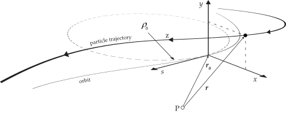
The three basis vectors
span the coordinate system. While the vector moves tangential to the orbit, the horizontal and vertical vectors are perpendicular to it. The distance covered on the ideal orbit is defined as the coordinate. The coordinate corresponds to the path length of the individual particle trajectory. The horizontal and vertical coordinates are labeled with and . For statements which are valid for both transversal planes we will use the general variable .
The position of the individual particle in the laboratory frame is given as the sum of the orbit position and its and coordinates in the Frenet-Serret system: The curvature of the particle trajectory can be expressed in terms of the individual multipole strengths:
2.2 Equations of motion
Exakte Bewegungsgleichung mit $ E = p c$
Approximation 1:
Approximation 2: nur ersten Term mitnehmen
Approximation 3: dritten Term vernachlässigen
Umschreiben und und
mit
The particle trajectory within non linear elements can be obtained by integrating eq. 2.10 numerically. This method was for example used to created the plots in sec. 2.4.
… But it is rather computational expensive and only allos for a numerical investigation. It would be desireable to habe an analytical formalism. Courant and Synder [11] developed an analytical formalism for the linearized equations of motion which is covered in the next section.
2.3 Linear Beam Dynamics
As the linear order of beam optics was thourghly described in my Bachelor’s Thesis [12], this section skips all derivations and provides only a summary of the most important results.
2.3.1 Linearized Equations of Motion
- how to get linearized eom
- linear eom are matrices
- hard ede modell and
X = R * X
transfer matrizen in den Anhang
2.3.2 Betatron oscillation
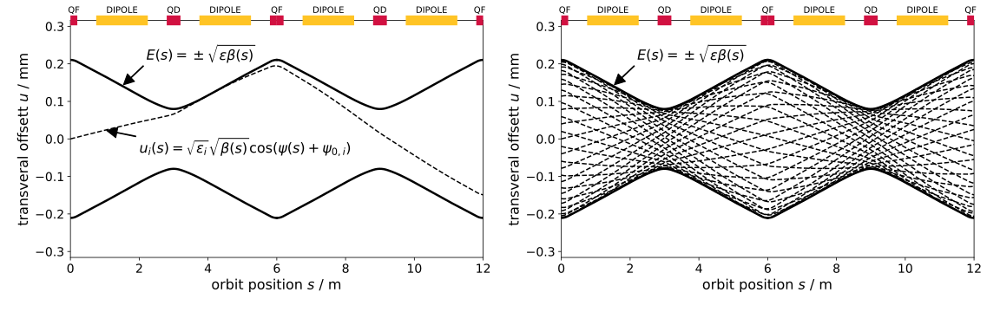
By neglecting the off-momentum terms and substituting for the horizontal and for the vertical plane, the linear equations of motion
The offset in linear order is given by eq. 2.13
the ellipse equation:
2.3.3 Transformation of the Twiss parameter
2.3.4 Dispersion
2.3.5 Momentum Compaction
2.4 Chromaticity
2.4.1 Natural Chromaticity in a Storage Ring
2.4.2 Chromaticity Correction
2.5 Synchrotron Radiation
The previous sections discussed the particle motion while neglecting any emission of synchrotron radition. However the random emission of photons has an influence on the amplitude of the betatron and synchrotron oscillations, which changes the beam emittance. At first this might seem like a violation of the Liouville’s theorem [reference to previous section]: It states that the phase space distribution of non-interacting particles in conservatives systems is constant along any path. Consequently the occupied volume in phase space must be conserved. The emittance corresponds to the occupied phase space volume of the electron beam. But as soon as an electron emits a photon, the beam emittance only occupies a sub-volume of the total electron-photon phase space, which is spaned by the coordinates of the electron and photon. Thus due to the synchrotron radiation and consistent with the Liouville’s theorem the beam emittance can change. The Liouville’s theorem still holds true for the entire electron-photon system.
To describe the effects of synchrotron radiation on the beam properties it useful to define the five so-called synchrtoron radiation integrals:
TODO: include poleface effect (see MAD-X source code or SLAC-Pub-1193)
2.5.1 Radiation damping
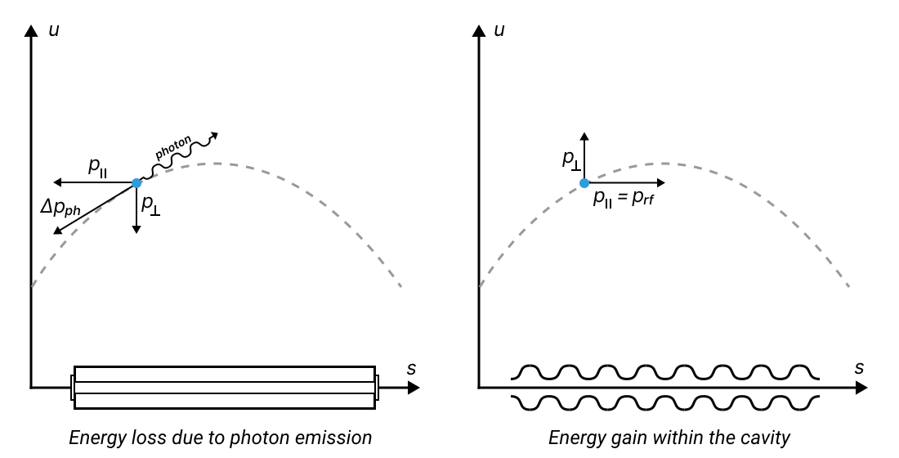
2.5.2 Quantum Excitation
But the betatron oscillation amplitude does not damp to zero. The damping is counteracted by the quantum excitation. Due to the quantum nature of the photons, the radiation is not continuous, but happens in discrete chunks of energy.
The five synchrotron radiation integrals give an overview of the radiation properties of a given lattice:
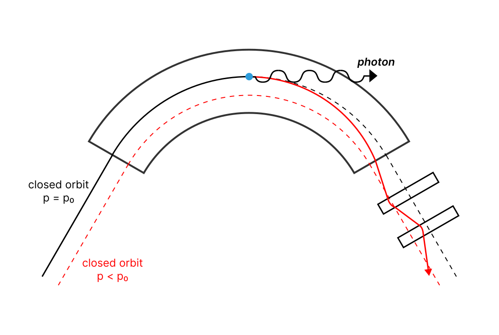
2.5.3 Natural Emittance
2.6 Lattice Design
The previous sections introduced the most important analytical parameters of particle beam dynamics. This sections discusses the concepts introduced at the example of different periodic lattices. At first we cover the FODO lattice, which is the most simple strong focusing lattice, then we move on to the double bend achromat lattice (DBA), which can be used to produce dispersion free straights, and finally look how the dispersion and emittance can be reduced further by the multi-bend achromat lattice (MBA). All plots are generated by the developed code.
2.6.1 The FODO Lattice
The FODO cell is the simplest possible strong focusing lattice. It consists out of alternating horizontal and vertical quadrupoles with drift spaces in between, which gives the cell its name: A horizontal Focusing quadrupole, a drift space (0 force), a horizontal Defocusing and a drift space (0 force). A schematic of the FODO lattice is shown in fig. 2.5.
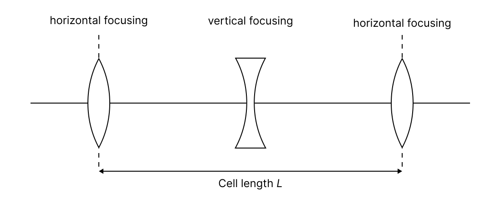
We can use the periodic condition of sec. 2.3.3 to calculate the optical functions and . The periodic solution of the Twiss parameter and for a FODO lattice without dipoles () are shown in the upper plot of fig. 2.6.
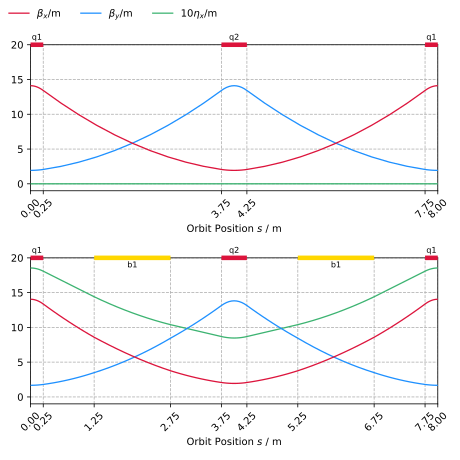
While the horizontal beta function reaches its maximum at the center of the horizontal focusing quadrupole Q1, the vertical beta function has it maximum at the center of the vertical focusing quadrupole Q2. As the dispersion is introduced by bending magnets, this FODO cell has a vanishing dispersion function . A high dispersion function is especially undesirable at the location of insertion devices. A circular accelerator must have bending magnets, as - by definition - it has to close at some point, which makes a non-vanishing dispersion function inevitable. But, as discussed in the next subsection, it is still possible to design a lattice which has no dispersion within certain sections of the ring.
The simplest way to create a FODO-based circular accelerator is to put a bending magnet in center of every drift space. The Twiss parameter and for such a FODO cell with dipoles () are shown in the lower plot of fig. 2.6. A comparison of various parameters for both FODO cells is listed in tbl. 2.1.
| without dipoles | with dipoles | |
|---|---|---|
| Cell length | 8.00 | 8.00 |
| Bending angle | 0.00 | 0.39 |
| Quadrupole strength | 0.80 | 0.80 |
| Horizontal tune | 0.28 | 0.28 |
| Vertical tune | 0.28 | 0.30 |
| Maximum horizontal beta | 14.11 | 14.05 |
| Maximum vertical beta | 14.11 | 13.82 |
| Maximum dispersion | 0.00 | 1.85 |
As one can see, the dipoles introduced a non-zero dispersion function with a graph similar to the horizontal beta function: A maximum of 1.8 meters at the center of the horizontal focusing quadrupole q1 and minimum of 0.8 meters at the center of the vertical focusing quadrupole q2. Due to the horizontal weak focusing of the dipoles and vertical focusing of the dipole edges the maxima of the horizontal and vertical beta functions are slightly smaller in comparison to the FODO cell without dipoles. For the same reasons the vertical tune is a bit larger.
As discussed in sec. 2.3.2, the evolution of phase space ellipse of the beam is fully defined by the , and functions, which are shown in fig. 2.7.
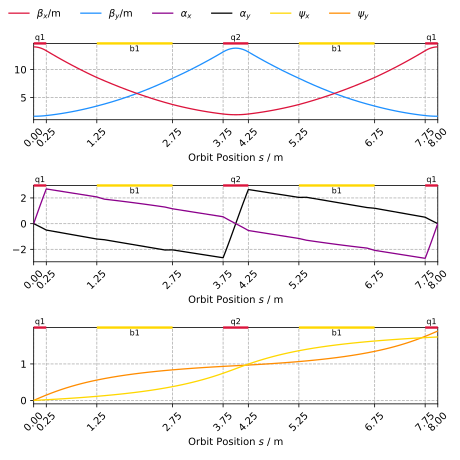
The trajectory of a particle in a strictly linear lattice is given by the superposition of two periodic functions
where is the envelope of the particle beam. When using Floquet’s coordinates , the particle trajectory has a perfect sinusoidal shape when plotted in dependence of the betatron phase as shown in fig. 2.8.
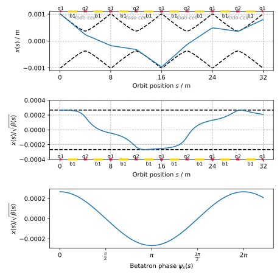
Not all configurations of quadrupole strengths result in a stable lattice. One condition is that the focal length of a quadrupole must greater than its distance to the next quadrupole. Otherwise the transversal offset of a particle and its derivative will have the same sign at the start of the next quadruple, which means that the deflection when passing through a defocusing quadrupole will be stronger and results in an unstable motion. A scan over possible quadrupole settings for different cell lengths of a FODO cell with and without dipoles is shown in fig:necktie-plot.
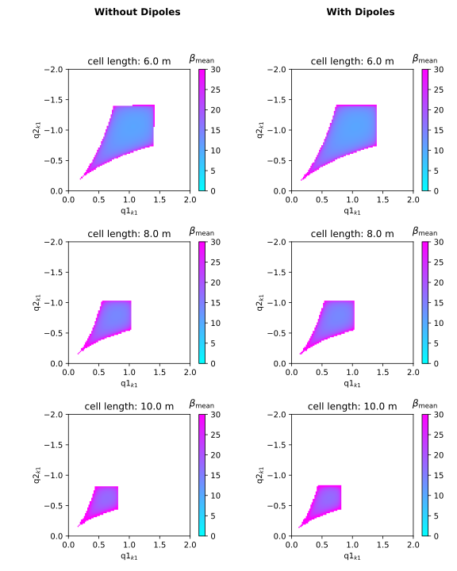
The area of stable solutions for a FODO cell without bending magnets is symmetrical to the diagonal. For low quadrupole strengths both quadrupoles need to have a similar strength to create a stable lattice. With increasing quadrupole strength a larger deviation of both quadrupole strengths is possible, which leads to the necktie shape of the stable area. The maximum quadrupole strength is limited by the condition, that the focal length of the quadrupoles must be greater than their distance from each other. The smallest average beta function for a FODO cell with a length of 6 meters is achieved when both quadrupoles are set to about 1.1 m.
With increasing cell length the area of stable solutions decreases. This is again due to the requirement that the focal length of the quadrupoles must be larger than their distance. This means setting quadrupoles closer together allows for greater field strengths.
The area of stable solutions for a FODO cell with dipoles is shifted in the direction of smaller quadrupole strengths for the horizontal focusing quadrupole . Also the area of stable solutions is a bit larger for smaller quadrupole strengths. This is due to the weak focusing of the dipole magnets. The smallest average beta function for a FODO cell with a length of 6 meters is achieved when the horizontal focusing quadrupole is set to 0.8 m and the vertical focusing quadrupole is set to 1.1 m. Just like the FODO cell without quadrupoles the area of stable solutions is decreased when the cell length increases.
2.6.2 The DBA Lattice
As the canonical FODO cell always has a finite dispersion function …
Compare wiedemann 241 vs wolski 3-21
2.6.3 The TBA Lattice
Compare wiedemann 244
3 Implementation
This chapter covers the challenges and consideration made of the implementation of the developed optics code. While time critical parts are written in C, most part of the optics code is implemnted in Python.
The code is availabe at:
https://github.com/andreasfelix/apace
3.1 Overview of Used Technology
3.2 Improving the Performance of the Twiss Calculation
- rewrite time critical part in c
- instead of matrix multiplication use ausmulitplizierten term
A relativey simple but effective optimization is
Twiss product is a R^n -> R^m …: write twiss multiplication in index notation (similar to einsum)
TODO: add pythran and numba
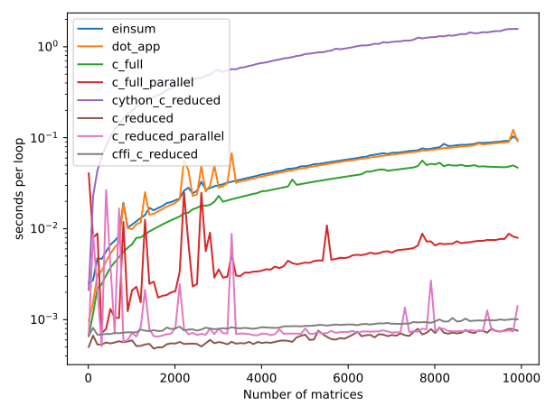
3.3 An Object-Orient Representation of the Magnetic Lattice
This section gives a short overview of the functionality of the Python library apace. A comprehensive documentation can be found at: https://apace.readthedocs.io
A main difficutly besides of the implementation of the physical simulation methods is the representation of the particle accelerator within the simulation software. To leverage the exisiting optimization and learning algorithms it is benefical to have a digital version of the machine.
This digital representation is often called an environment which the optimizer or agents can act on. The different tracking or twiss calculation implementations are build on top of this enviroment. If the agent changes the environment, by for example changing the value of a magnet, the enviroment informs the simulation method that it needs to recompute the new state of the particle beam. Once the the new state is computed the optimizer can observe the new state and take a new action on the environment. These steps are repeated until a satisfying state is reached. (See fig. 3.2)
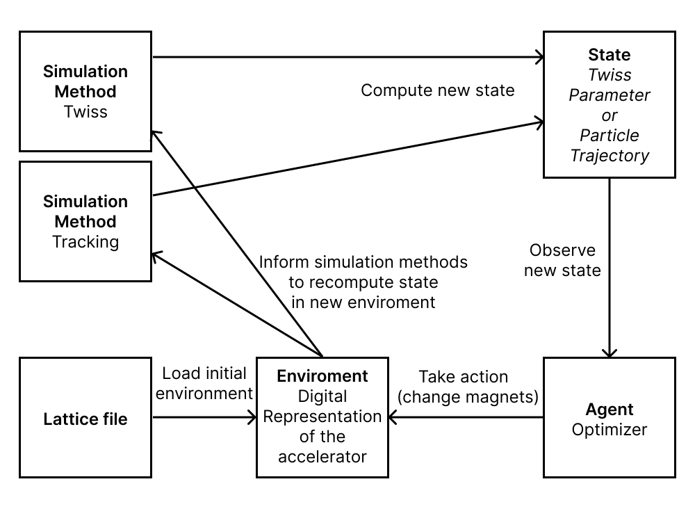
The description of accelerator is stored in a so called lattices file. This file has to be parsed by the simulation software and the different constituents of the accelerator have to be represented by data types which are availalbe in the given programming language.
As Python is predominantly used at HZB and it was chosen to implement the digital representation of the accelerator. To provide a convenient interface this was done by done in a object-oriented way primarliy using two base classes:
ElementclassLatticeclass
An instance of Element class is a fundamental building block of the particle accerlator. This could be for example a Drift space, a Dipole magnet or a Cavity object. On the other hand, an instance of the Lattice class is a sequence of Element objects or even other (sub-)Lattice objects.
Each different element type is a subclasss of the Element class, which provides common attributes like a length or name, which uniquely identifies the element. Each subclass implements additional attributes to describe the given element type. This
As this object-orient way comes at a price, the simulation methods itself should use more primitve data structures like arrays. Only the interface to digital version of the particle accelerator should use this higher-level data structures. The simulation methods should be implemented as fast as possible.
The representation of the particle accelerator can be thought of as a tree-like structure, as shown in fig. 3.3, where the Element objects are the leafs, the sublattices are the nodes and the main lattices is the root the tree.
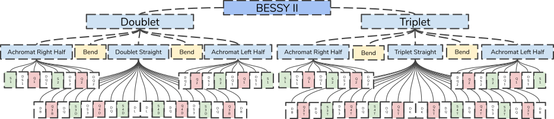
3.4 LatticeJSON: An Attempt towards a Universal Lattice File Format
The definition of the magnetic lattice is stored in a so called lattice file. At the moment there are several of these data formats and all can only be processed by the corresponding simulation software. This variety of different lattice file format is an ongoing issue of accelerator physics and has even its on dedicated wikipedia section [13]. There exist several converters between these files, which are able to do the heavy lifiting, but often still require manual adjustments made by a human. But even if the lattice file is availiabe in all common formats, there is still no straightfoward way to load the data into the programming language of your choice. As the most mature accelerator simulations codes come bundled with several optimization routines and a scripting language, this was a smaller problem in the past. But in the last several years, there was an uprise of powerful scripting languages and modern optimization libraries. To leverage these tools it would be is necessary to have convenient access to the lattice data.
As at HZB and for this thesis Python was used, one solution would be to write a robust parser for an existing lattice file format. Candidates would be the MADX[4] or elegant[5] lattice file format, which are very similar but not compatible. Both file formats have the problem that syntax is ambiguous: Without further context the parser cannot infer the type of an attribute. For example in
TWISS, FILE=optics;optics is a string and not a variable name. In another case
RFC: RFCAVITY, HARMON = num;num refers to a variable and not a string. In these cases the parser has to know the type of FILE and HARMON to parse the file correctly. This makes the implementation of a parser non-trivial and ties the file format specific the simulation software. Both lattice file formats also support variables and arithmetic expressions. MADX even supports more advanced constructs like loops, macros and if-else statements. This makes the implementation of such a parser even more difficult and error-prone. If the goal is to be 100% compatible one would have to reimplement a whole programming language, just to load the lattice data. A more feasible solution would be to define a restricted subset of the MADX input file, which would contain only data and no logic. Grammar files which allow to load basic elegant and a subset of MADX lattice files into Python are given in the appendix sec. 5.2.1 and sec. 5.2.2, respectively. These work for simple cases but fail for more advanced lattice files, because of the above mentioned reasons.
A better solution for plain lattice data format would be to define a schema for an existing data format, which already has parsers for the the most popular programming languages. One attempt of such an universal lattice file format was the Accelerator Markup language (AML)[14] and the Universal Accelerator Parser (UAP)[15]. The AML is based on the eXtensible Markup Language (XML), which is syntactically similar to HTML, the standard markup language for web documents. AML’s goal was to support the evaluation of arithmetic expressions and two different representations of the magnetic lattice: A “unevaluated” representation with contains nested beamlines as well as variables and a “flat” representaiton, where the sub-lattices are expanded into a flattend array of lattice elements. Furthermore it aimed to support information beyond the lattice description, like control system configurations, magnet history or other documentary data. This way AML could be used as an all-in-one solution for an accelerator facilities’s database. As of March 2020, AML and the UAP are no longer maintained.
The AML had high ambitions, which made it difficult to implement. The large amount of feature, like variables and a complex representation of the magnetic lattice, made it, even though it is based on XML, necessary to implement a custom parser for every programming langugage.
This thesis takes a simpler approach: Variables or other dependency relations should not be implemented by the lattice file. This functionality is already availabe in programming languages, and should not be reimplemented in the lattice file. The definition of lattice file should not rely on different representations of the magnetic lattice. The lattice file should be easy to load and should not require an additional parser. The main purpose of this lattice file should be simulation code and the implementation should not be complicated by making it suitable for control system usage.
Further requirements are: The lattice file format should be independent of the simulation tool and programming language. The file format should be commonly used, so there is no need to implemented it for different programming languages. It should be easy to generate elegant and MAD-X files from this intermediate format. It should be taken into account, that the magnetic lattice has a tree-like structure (see @#fig:lattice-tree): The magnetic lattice consist of different elements, like drifts, magnets or cavities, as well as of sub-lattices, which by itself are made of other elements. A universal lattice file format should somehow take this structure into account.
Storing the description of the magnetic lattice raises effectivly two questions (fig. 3.4):
- How to store the lattice file persistently on disk?
- How to represent the lattice file within a programming language?
As data structures and object types a specifically tied to a programming language it is not possible to choose arbitary data types. But practically every programming language supports primitives like strings, numbers, bools, null and some type of containers structures like arrays and key-value stores. The goal should be to provide a consistent way to represent the information stored in the lattice files using these generic data types. This representation should not try to invent the next scripting language, but it should be a pure data format. This way the lattice data can be used by any programming language.
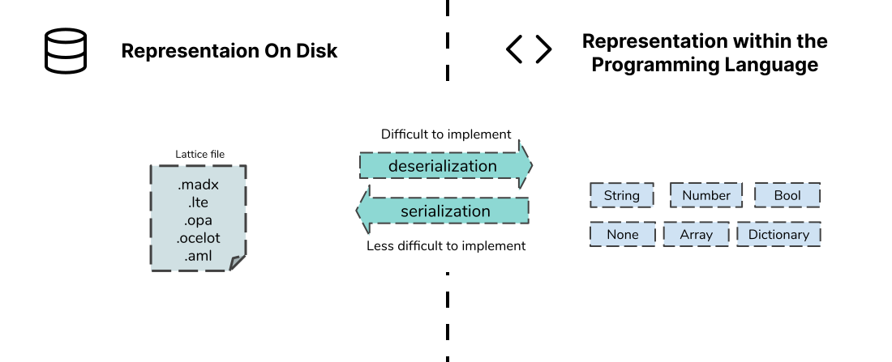
Fortunately this issues is already solved by JSON [16], which is an acronym for JavaScript Object Notation. Even though it has its origins in JavaScript, it is a language-independent and open data file format. It is able to describe complex data and is the de-facto standard for exchanging data between web applications. There already exist an huge amount of tools for validating and working with JSON.
JSON effectlify answers both questions as the is a 1:1 correspondence between JSON data types and the generic data types available in almost all programming languages. Once parsed, the lattice description is represented by the same abstraction of data types as when the lattice information was stored on disk. One problem of AML was, that the parsed lattice data, returned by the UAP, had a different structure than the stored XML file. So there were effectively two different representations of the same information.
JSON provides a convenient way to serialize and deserialize generic data types. To make use of JSON, the description of the magnetic lattice has still to defined in terms of these generic data types. Such a definition can be done with a so called JSON schema [17]. A first definition of such a JSON based lattice file format was done and called LatticeJSON. The LatticeJSON schema file as well as more information on LatticeJSON is available at [18].
For example, the definition of a FODO lattice as LatticeJSON file is given by:
{
"version": "2.0",
"title": "FODO Lattice",
"info": "This is the simplest possible strong focusing lattice.",
"root": "RING",
"elements": {
"D1": ["Drift", {"length": 0.55}],
"Q1": ["Quadrupole", {"length": 0.2, "k1": 1.2}],
"Q2": ["Quadrupole", {"length": 0.4, "k1": -1.2}],
"B1": ["Dipole", {"length": 1.5, "angle": 0.392701, "e1": 0.1963505, "e2": 0.1963505}]
},
"lattices": {
"CELL": ["Q1", "D1", "B1", "D1", "Q2", "D1", "B1", "D1", "Q1"],
"RING": ["CELL", "CELL", "CELL", "CELL", "CELL", "CELL", "CELL", "CELL"]
}
}To read the quadrupole strength of the Q1 quadrupole in Python one could use:
import json
with open("/path/to/lattice.json") as file:
lattice = json.load(file)
type_, attributes = lattice["elements"]["Q1"]
print("Quadrupole strength", attributes["k1"])Or, one can use the latticejson library, which validates the lattice file and can load lattices files from URLs.
import latticejson
lattice = lattice.load("https://lattice-database.io/bessy2?mode=stduser")The URL lattice-database.io is chosen as an illustrative filler in this example. But it should be a goal to establish a central database of magnetic lattice files, where the operation mode or file format can be passed as a URL parameter. This would give physisicts access to a large number of lattice files, without the overhead maintaining an own set of lattices. As it is straightforward to automatically generate different versions of a JSON file, LatticeJSON could simplify the implementation of such a database significantly.
4 Applications
This chapter covers the applications of the developed optics simulation progam at the BESSY II storage ring. The first section comprises the development of the Q5T2-off optics with regard to the VSR project. In the second section the shows how the code was used to adapt the beta functions within a straight for a emittance exchange experiment. Possible future applications are discussed in the third chapter.
4.1 Adjusting the BESSY II Optics for the VSR project
The cavity module needs more space than initially assumed …
4.1.1 Optimizing the Q5T2 Optics in Simulations
The first steps towards a Q5T2 optics are described in my bachelor’s thesis [12]. With the best solution found it was possible to achieve a working machine with reasonable injection efficency and lifetime. An issue was the relatively high beta beat along the storage ring. As the sextupole settings is carefully finetuned for the current standard user mode and to avoid confilicitng with previous made considerations, the goal should be to reduce the beta beat as much as possible.
Due to the improvements made to the Twiss calculation code, it was now possible to do much more iterations in a much shorter time span: An
With the developed code this roughly translates to: (TODO: update!!)
def fitness(params):
for element, attribute, param in zip(elements, attributes, params):
setattr(element, attribute, param)
twiss = lin.get_twiss()
betaxres = twiss.betax / ref_twiss.betax
betayres = twiss.betay / ref_twiss.betay
betaxres[betaxres < 1] = 1
betayres[betayres < 1] = 1
betaxres = betaxres ** 2
betayres = betayres ** 2
return np.mean([betaxres, betayres])
scipy.optimize.minimize(fitness, initial_values)Ausflug der nichts damit zu tun hat (Exkurs): Splitting the D2/D3 families
4.1.2 User Operation Acceptance Test of the Q5T2 Optics
The new obtained opitcs was
multiknob
- Injection Efficiency
- Kicker Lifetime
- IDs, bumps
- High current test
- General effects on user operations
4.2 High Beta Functions in T2 (Emittance Exchange)
Besides of the Q5T2-off optics, the developed Twiss optimization code was also used for an emittance exchange experiment. The experiment required a large and constant beta function of 15m along the whole T2 straight while retaining the beta function the same within the rest of the storage ring.
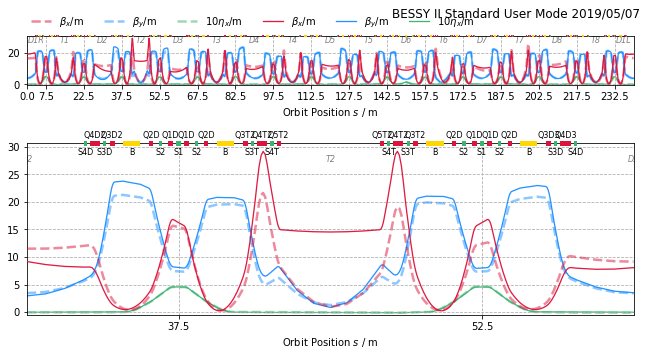
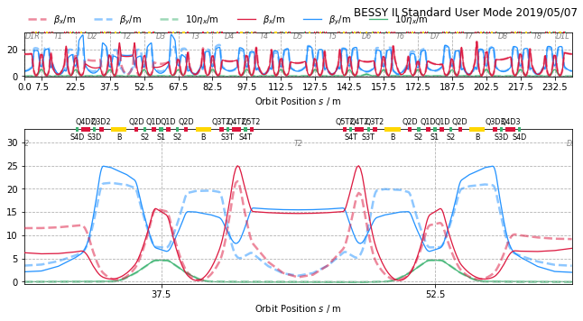
4.3 Future Applications
5 Conclusion
This is the conclusion
Appendix
5.1 Developed Code
The source code is available at: https://github.com/andreasfelix/apace
apace is yet another particle accelerator code designed for the optimization of beam optics. It is available as Python package and aims to provide a convenient and straightforward API to make use of Python’s numerous scientific libraries.
5.1.1 Installing
Install and update using pip:
pip install -U apace5.1.2 Requirements
- Python 3.6 or higher (CPython or PyPy)
- CFFI 1.0.0 or higher
- NumPy/SciPy
- Matplotlib
5.1.3 Quick Start
Write some code within normal Text.
def foo(lala):
x = 10
y = x ** 2
return yImport apace:
import apace as apCreate a ring consisting out of 8 FODO cells:
d1 = ap.Drift('D1', length=0.55)
b1 = ap.Dipole('B1', length=1.5, angle=0.392701, e1=0.1963505, e2=0.1963505)
q1 = ap.Quadrupole('Q1', length=0.2, k1=1.2)
q2 = ap.Quadrupole('Q2', length=0.4, k1=-1.2)
fodo_cell = ap.Lattice('FODO', [q1, d1, b1, d1, q2, d1, b1, d1, q1])
fodo_ring = ap.Lattice('RING', [fodo_cell] * 8)Calculate the Twiss parameters:
twiss = ap.Twiss(fodo_ring)Plot horizontal and vertical beta functions using matplotlib:
import matplotlib.pyplot as plt
plt.plot(twiss.s, twiss.beta_x, twiss.s, twiss.beta_y)5.1.4 Links
- Documentation: https://apace.readthedocs.io
- API Reference: https://apace.readthedocs.io/en/stable/reference/apace/index.html
- Examples: https://apace.readthedocs.io/en/docs/examples/index.html
- Releases: https://pypi.org/project/apace/
- Code: https://github.com/andreasfelix/apace
- Issue tracker: https://github.com/andreasfelix/apace/issues
5.1.5 License
5.2 Grammar Files of Common Lattice File Formats
The grammar files are given in the Lark grammar language, which is based on the Extended Backus–Naur Form.
5.2.1 Elegant Grammar File
This grammar is not 100% consistent with elegants parser:
- Elegants parser allows tokens to be split by the line continuation character “&”. For example, it parses ANGLE=0.123& without an error. This is non-trivial to express with grammar rules and is therefore omitted.
- Elegants parser allows a trailing " in attribute definitions. This means L=1.23" is parsed without an error. Seems like a bug and is left out.
- Elegants parser allows unlimited trailing “,”, which also seems like a bug.
%ignore /!.*/ // ignore comments
%ignore /[ \t\f]/+ // ignore whitespace
%ignore /&[ \t\f]*\r?\n/ // line continuation
%import common (SIGNED_INT, SIGNED_FLOAT, SIGNED_NUMBER, ESCAPED_STRING, CNAME)
int : SIGNED_INT
float : SIGNED_FLOAT
string : ESCAPED_STRING
word : /\w+/
name : /\w+/ | "\"" /[\w:]+/ "\""
start : _NEWLINE* (statement _NEWLINE+)*
_NEWLINE : /[ \t\f]*\r?\n[ \t\f]*/
?statement : element | lattice | command | "%" assignment
element : name ":" [name] ("," attribute)* ","?
attribute : word "=" (int | float | string | word)
lattice : name ":" "LINE"i "=" arrangement
arrangement : [int "*"] [/-/] "(" object (","+ object)* ")"
?object : ref_name | arrangement
ref_name : [int "*"] [/-/] ["\""] /[\w:]+/ ["\""]
command : name ["," word]5.2.1.1 RPN Expression
Elegant used the so called reverse polish notation (RPN) for its arithmetic expressions. As there is no syntactic distinction between an escaped string and a variable, it is possible that a collision can happen. In this case a variable is wrongly identified as string.
assignment : expr "sto" CNAME
?expr : SIGNED_NUMBER -> number
| CNAME -> variable
| function
| binary
!function : expr ("exp" | "sin" | "cos" | "tan" | "asin" | "acos" | "atan")
?binary : expr expr "+" -> add
| expr expr "-" -> sub
| expr expr "*" -> mul
| expr expr "/" -> div
?start_rpn : assignment | expr // used to tested the rpn parser5.2.2 MADX Grammar File
This is an restricted subset of MADX which should be sufficient to parse basic lattice files.
%ignore /\s+/ // whitespace
%ignore "&" // backwards compatiable line continuation
%ignore /(!|\/\/).*/ // single line comments
%ignore /\/\*(\*(?!\/)|[^*])*\*\// // multiline comment
%import common (SIGNED_INT, NUMBER, ESCAPED_STRING)
int : SIGNED_INT
string : ESCAPED_STRING
word : /[\w\.]+/
start : (_statement ";")*
_statement : element | lattice | command | assignment
element : word ":" [word] ("," attribute)* ","?
attribute : word ("=" | ":=") (expr | string)
lattice : word ":" "LINE"i "=" arrangement
arrangement : [int "*"] [/-/] "(" object ("," object)* ")"
?object : ref_name | arrangement
ref_name : [int "*"] [/-/] word
command : word ("," (word | string | attribute))*5.2.3 Arithmetic Expressions
As there is no syntactic distinction between a non-escaped word and a variable, we must parse words as variables and test afterwards if it is a variable or not.
assignment : word ("=" | ":=") expr -> assignment
?expr : item
| "{" expr ("," expr)* ","? "}" -> array
?item : term
| expr "+" term -> add
| expr "-" term -> sub
?term : factor
| term "*" factor -> mul
| term "/" factor -> div
?factor : power
| "+" factor -> identity
| "-" factor -> neg
?power : atom
| power ("^" | "**") power -> pow
?atom : NUMBER -> number
| word -> variable // see 1.
| word "(" expr ")" -> function
| "(" expr ")"
?start_artih : assignment | expr // used to tested the arithmetic parserBibliography
[1] T. A. et al., “Commissioning of the 50 mev preinjector linac for the bessy ii facility,” Proceedings of IPAC2011, San Sebastián, Spain, pp. 3140–3142, 2011.
[2] A. J. et al., BESSY vsr – technical design study. Helmholtz-Zentrum Berlin für Materialien und Energie GmbH, 2015.
[3] M. Rubrecht, Calculation of coupled bunch effects in the synchrotron light source bessy vsr. Helmholtz-Zentrum Berlin (HZB), 2016.
[4] F. S. et al. Hans Grote and L. Deniau, Methodical accelerator design. CERN, 2020.
[5] M. Borland, Elegant: A flexible sdds-compliant code for accelerator simulation. Argonne National Laboratory, 2017.
[6] Y. I. L. K. Fuchsberger, “PyMad – integration of madx in python,” Proceedings of IPAC2011, San Sebastián, Spain, 2011.
[7] H. Wiedemann, Particle accelerator physics. Springer, 2007.
[8] A. Wolski, I. of Physics (Great Britain), and M. & Claypool Publishers, Introduction to beam dynamics in high-energy electron storage rings. Morgan & Claypool Publishers, 2018.
[9] K. Wille, The physics of particle accelerators: An introduction. Clarendon Press, 2001.
[10] F. Hinterberger, Physik der teilchenbeschleuniger und ionenoptik, 2. Aufl. Berlin Heidelberg New York: Springer-Verlag, 2008.
[11] E. D. Courant and H. S. Snyder, “Theory of the alternating-gradient synchrotron,” Annals of Physics, pp. 1–49, 1954.
[12] F. Andreas, Optimization of the bessy ii optics for the vsr project - increase the installation length for the vsr cryomodule in the t2 section of the bessy ii storage ring. 2017.
[13] Wikipedia, “Lattice file format and data interchange issues,” Accessed: Jul. 21, 2020. [Online]. Available: https://en.wikipedia.org/wiki/Accelerator_physics_codes#Lattice_file_format_and_data_interchange_issues.
[14] M. F. et. al. D. Sagan, “The accelerator markup language and the universal accelerator parser,” Proceedings of EPAC 2006, Edinburgh, Scotland, 2006.
[15] A. W. D. Bates D. Sagan, “The accelerator markup language and the universal accelerator parser,” Proceedings of ICAP 2006, Chamonix, France, 2006.
[16] D. Crockford, “JSON (javascript object notation),” Accessed: Jul. 21, 2020. [Online]. Available: https://www.json.org.
[17] “JSON schema,” Accessed: Jul. 21, 2020. [Online]. Available: https://json-schema.org/.
[18] F. A. et. al., “LatticeJSON - a json based lattice file format,” Accessed: Jul. 29, 2020. [Online]. Available: https://github.com/nobeam/latticejson.